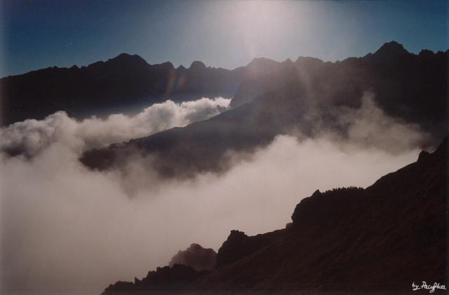
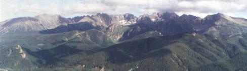
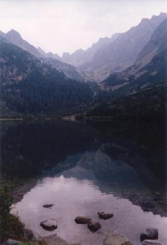
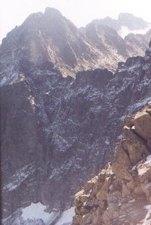
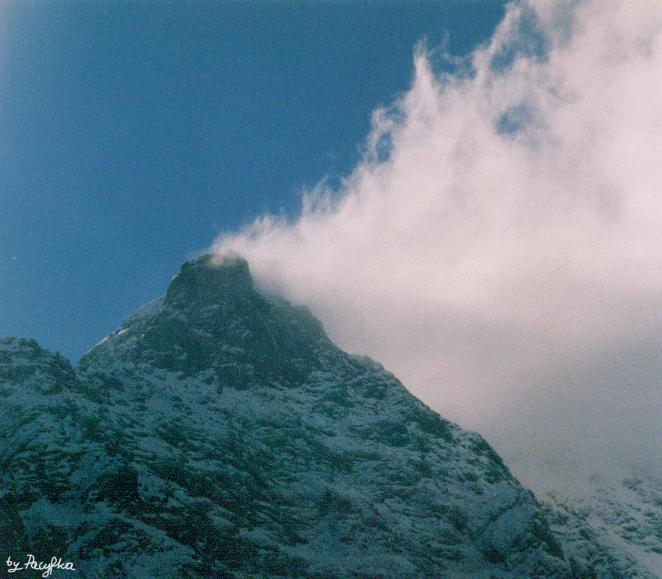

|  |
"Gerlach, Łomnica i Lodowy
Nad białe morze chmur Podnoszą swoje dumne głowy: Króle tatrzańskich gór." Najwyższe szczyty to Gerlach (z prawej) i Lodowy Fot. Pacyfka |
| Władysław Tarnowski (1834/44
-1878)
Nowotarska dolina
Patrz ten chaos!... jak wielki pożar całej ziemi
Tam szeregiem za sobą - bieżą lekkie, białe,
Tam Murań się wychyla z swych wirchów drużyną,
A w górze naga skała rozdziera błękity!
|
| fot. Sivy |  |
| Kazimiera Alberti (1898-1962)
List pierwszy U ciebie także kolorowa jesień.
Górą obłoki szybują pogodne
W takie dni winne, soczyste i chłodne -
Ręce w Popradzkim skąpać stawie -
Ręce na klamrach podrapać do krwi -
A gdy się spod nóg głazu zsunie ząb -
Godziny długie tak w znużeniu trwać -
Posłuchać jaką wielką falą
Czuć w ten jesienny, rdzawy czas -
|

"Ręce w Popradzkim skąpać stawie.." fot. Pacyfka |
| Teresa Harsdorf - Bromowiczowa
(ur. 1912)
Twój powrót Wróć. Tatry przyzwały cię tęsknotą.
|

Ganek i Gerlach fot. Pacyfka |
|
"Samotne jak ty - kipiące i dzikie - czekamy odważnie." Niżne Rysy fot. Pacyfka |
 |